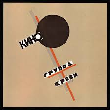
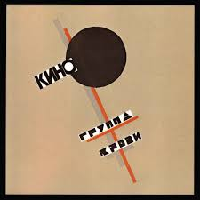

Про групу та виконавця
Володимир Цой — легендарний рок-музикант, фронтмен гурту "Кино". Його пісні досі актуальні — символ молодості та свободи.
Гурт "Кино" створив хіти, які стали класикою радянського року, серед яких «Группа крови» та «Пачка сигарет».
Візуальний стиль групи відомий своєю простотою та символізмом, а тексти — глибокі та філософські.
 
